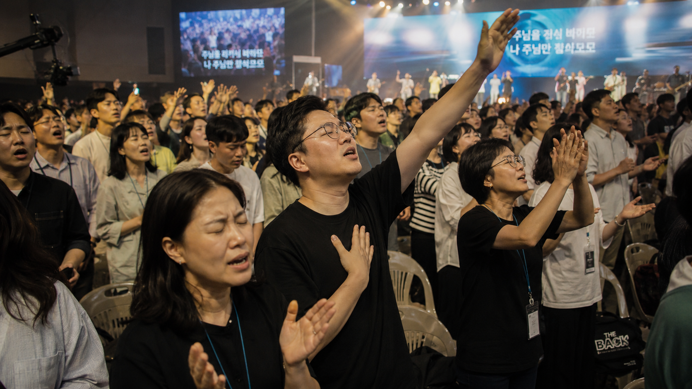

JMC 2026 Staff Cue Sheet
행사 큐시트
개회예배, 글로벌 미션의 밤, 선교전략포럼, 파송예배의 진행 큐와 스탭 액션을 한 페이지에서 확인합니다.
4
주요 행사
45+
진행 큐
20+
담당 포인트
8
백업 플랜
권한 확인 중
스탭권한을 확인하고 행사 큐시트를 불러오고 있습니다.
Cue Sheet Protocol
현장 큐시트 공통 운영 원칙
- 진행감독은 각 순서 10분 전, 5분 전, 1분 전 콜을 무전으로 공유합니다.
- 사회자, 강사, 예배인도자, 발표자는 무대 진입 전 대기 위치를 한 번 더 확인합니다.
- 영상, 자막, 음향은 메인 장비와 백업 파일을 모두 준비하고 순서 변경 시 즉시 같은 문구로 맞춥니다.
- 예배와 결단 순서는 분위기를 우선하되, 식사와 퇴장 동선은 시간과 안전을 함께 관리합니다.
DAY 1 · 오후 04:00
개회예배 예상 큐시트
컨퍼런스의 첫 분위기를 여는 예배입니다. 입장 안내, 오프닝 영상, 히엘워십 찬양, 환영사와 기도, 김택수 총장 말씀까지 흐름이 끊기지 않도록 진행합니다.
진행총괄
히엘워십
미디어/자막
안내/등록
의전/강사케어
| 시간 | 큐 | 스탭 액션 |
|---|---|---|
| 15:00 | 스탭 콜타임 | 본당, 로비, 등록데스크, 강사 대기실 담당자가 무전 채널을 열고 좌석/동선/명찰 잔여 수량을 최종 확인합니다. |
| 15:20 | 리허설 마감 | 히엘워십 라인체크, 오프닝 영상 음량, 사회자 핸드마이크, 말씀 PPT, 자막 싱크를 동시에 점검합니다. |
| 15:35 | 입장 전환 | 하우스 음악을 올리고 안내팀은 중앙 통로를 비워 둡니다. 앞자리부터 자연스럽게 착석하도록 로비 안내를 시작합니다. |
| 15:50 | 10분 전 콜 | 사회자 이승록 목사, 환영사 및 기도 김경석 목사, 말씀강사 김택수 총장 위치를 확인하고 무대 좌우 대기선을 확보합니다. |
| 16:00 | 오프닝 영상 | 하우스 조명을 40%로 낮추고 타이틀 영상 송출 후 마지막 5초에 사회자 무대 진입 큐를 전달합니다. |
| 16:03 | 사회자 인사 | 사회자는 환영 멘트와 예배 시작 선언을 짧게 진행합니다. 자막팀은 행사명/일정 안내 슬라이드를 대기합니다. |
| 16:07 | 경배와 찬양 | 히엘워십이 3곡 내외로 예배 분위기를 엽니다. 안내팀은 첫 곡 후 지각 입장자를 후방 좌석으로 안내합니다. |
| 16:30 | 환영사 및 기도 | 김경석 목사 등단 전 강대상 마이크를 활성화하고 카메라는 중앙 풀샷에서 상반신 샷으로 전환합니다. |
| 16:42 | 말씀 | 김택수 총장 소개 후 말씀으로 연결합니다. 미디어팀은 성경본문/핵심문구 자막과 강사 프로필 슬라이드를 준비합니다. |
| 17:25 | 합심기도 | 말씀 후 사회자 또는 예배인도자가 컨퍼런스 비전과 참석자 헌신을 위한 기도로 전환합니다. |
| 17:45 | 광고/저녁 전환 | 저녁식사 장소, 오후 8시 글로벌 미션의 밤 재입장 시간을 화면과 멘트로 반복 안내합니다. |
| 18:00 | 퇴장/정리 | 안내팀은 식당 동선을 열고 미디어팀은 글로벌 미션의 밤 영상/간증 자료 백업을 즉시 재확인합니다. |
스탭 핵심 큐
- 오프닝 영상 종료 5초 전 진행감독이 사회자 진입을 무전으로 호출합니다.
- 말씀 시작 후에는 좌우 후문만 열어 예배 집중도를 유지합니다.
- 저녁식사 안내는 사회자 멘트, 화면 슬라이드, 로비 안내판을 같은 문구로 맞춥니다.
백업 플랜
- 영상 송출 장애 시 사회자가 즉시 환영 멘트로 시작하고, 영상은 찬양 후 광고 전으로 이동합니다.
- 강사 도착 지연 시 히엘워십이 기도곡 1곡을 추가하고 진행팀은 의전 담당에게 3분 단위로 상황을 확인합니다.
DAY 1 · 오후 08:00
글로벌 미션의 밤 예상 큐시트
세계 선교 현장의 이야기를 영상, 간증, 찬양, 합심기도와 말씀으로 엮는 밤 집회입니다. 무대 전환과 자료 송출 타이밍이 핵심입니다.
진행총괄
히엘워십
영상/송출
간증자 케어
기도인도/안내
| 시간 | 큐 | 스탭 액션 |
|---|---|---|
| 19:00 | 자료 백업 | 선교 영상, 간증자 사진, 강사 프로필, 엔딩 기도 슬라이드를 메인/백업 노트북 양쪽에 열어 둡니다. |
| 19:25 | 간증자 대기 | 김파울 선교사, 여병무 선교사 동선과 핸드마이크 번호를 확인하고 대기석을 무대 가까이에 배치합니다. |
| 19:40 | 입장 환경 | 세계지도 또는 선교지 사진 루프 영상을 틀고 로비 안내팀은 본당 입장을 재개합니다. |
| 19:55 | 5분 전 콜 | 사회자 이상돈 목사, 축사 및 기도 정민철 목사, 말씀강사 박창신 목사 도착 위치를 확인합니다. |
| 20:00 | 오프닝/찬양 | 히엘워십이 밝고 선교적인 분위기의 찬양으로 시작합니다. 조명은 회중과 무대가 함께 보이도록 운용합니다. |
| 20:25 | 사회자 브릿지 | 사회자는 밤 집회의 목적을 소개하고 첫 번째 선교 영상으로 연결합니다. 자막팀은 국가/사역명 표기를 준비합니다. |
| 20:32 | 선교간증 1 | 김파울 선교사 간증. 영상팀은 인물 클로즈업, 자막팀은 핵심 기도제목 2개를 화면 하단에 표시합니다. |
| 20:47 | 선교간증 2 | 여병무 선교사 간증. 다음 순서 전환을 위해 무대 매니저가 축사자 위치를 동시에 확인합니다. |
| 21:02 | 축사 및 기도 | 정민철 목사가 선교 현장을 위한 축사와 기도를 진행합니다. 기도 중 조명은 회중 중심으로 낮춥니다. |
| 21:14 | 합심찬양/기도 | 히엘워십이 기도곡으로 재등장하고, 사회자는 나라별/사역별 합심기도 제목을 짧게 제시합니다. |
| 21:28 | 말씀 | 박창신 목사 말씀. 강사 소개 슬라이드 후 강대상 조명과 말씀 자막을 고정합니다. |
| 22:10 | 헌신기도/마무리 | 선교 헌신과 중보기도로 마무리하고 다음 날 오전 10시 선교전략포럼을 안내합니다. |
스탭 핵심 큐
- 간증 전후 영상은 페이드아웃 시간을 3초로 통일해 말과 화면이 겹치지 않게 합니다.
- 간증자가 눈물을 흘리거나 시간이 늘어질 경우 사회자가 감사 멘트로 부드럽게 수습합니다.
- 기도제목 슬라이드는 간증자의 마지막 문장 직후 바로 띄울 수 있게 미리 대기합니다.
백업 플랜
- 영상 파일 오류 시 사진 슬라이드와 사회자 멘트로 대체하고 간증 순서를 먼저 진행합니다.
- 간증자가 늦을 경우 축사 및 기도를 앞으로 당기고 찬양팀은 기도곡 1곡을 추가합니다.
DAY 2 · 오전 10:00
선교전략포럼 예상 큐시트
전문인선교, 교육선교, 교회내선교, 해외선교, 국내선교, 몽골 사역 발표를 시간 안에 묶어내는 포럼입니다. 발표자 전환과 질의응답 통제가 중요합니다.
포럼진행
세컨워십
발표자 케어
타임키퍼
마이크/자막
| 시간 | 큐 | 스탭 액션 |
|---|---|---|
| 09:10 | 장비 세팅 | 패널 좌석, 발표자 노트북, 포인터, 타이머 화면, 무선마이크 2개, 객석 질문용 마이크 1개를 준비합니다. |
| 09:30 | 발표자료 확인 | 김명순 목사, 최정기 교수, 김경석 목사, 김파울 목사, 장량 선교사, 여병무 선교사 자료 순서를 맞춥니다. |
| 09:50 | 입장/착석 | 참석자는 앞쪽부터 착석시키고 발표자는 무대 가까운 지정석에 앉아 대기합니다. |
| 10:00 | 찬양/기도 | 세컨워십이 1-2곡으로 시작하고 포럼의 성격에 맞게 짧은 기도로 전환합니다. |
| 10:10 | 사회자 오프닝 | 박상준 목사가 포럼 목적, 발표 순서, 질의응답 방식을 안내합니다. |
| 10:18 | 전문인선교 | 김명순 목사 발표. 타임키퍼는 2분 전/종료 카드를 보여 줍니다. |
| 10:30 | 교육선교 | 최정기 교수 발표. 자막팀은 핵심 키워드와 적용 질문을 화면 하단에 정리합니다. |
| 10:42 | 교회내선교 | 김경석 목사 발표. 다음 발표자의 슬라이드는 발표 종료 1분 전부터 대기합니다. |
| 10:54 | 해외선교 | 김파울 목사 발표. 선교지 사진이나 지도 자료가 있으면 발표자 발언에 맞춰 넘깁니다. |
| 11:06 | 국내선교 | 장량 선교사 발표. 객석 반응이 필요한 질문은 사회자가 손들기 방식으로 짧게 받습니다. |
| 11:18 | 몽골 사역 | 여병무 선교사 발표. 마지막 발표 후 패널석으로 자연스럽게 이동하도록 의자를 정돈합니다. |
| 11:32 | 패널 Q&A | 사회자가 사전 질문 2개, 현장 질문 2개를 선별합니다. 객석 마이크 담당자는 질문자를 먼저 확인합니다. |
| 11:52 | 정리/기도 | 사회자가 공통 적용점을 3문장으로 정리하고 점심식사 및 오후 일정으로 연결합니다. |
스탭 핵심 큐
- 발표자는 10분 기준, 2분 전 노란 카드, 종료 빨간 카드로 통일합니다.
- 질문은 의견 발표가 되지 않도록 사회자가 30초 질문 원칙을 안내합니다.
- 발표자료 파일명은 발표 순서 번호를 붙여 송출 담당자가 즉시 찾을 수 있게 합니다.
백업 플랜
- 발표자료가 열리지 않으면 발표자 소개 슬라이드와 핸드마이크 토크로 먼저 진행합니다.
- 시간이 밀리면 현장 질문을 생략하고 사회자가 사전 질문 1개만 선택합니다.
DAY 2 · 오후 02:00
파송예배 예상 큐시트
컨퍼런스의 결단을 실제 파송으로 마무리하는 예배입니다. 말씀, 초청과 결단, 파송기도, 선물추첨, 퇴장 안내까지 감정선과 동선을 함께 관리합니다.
진행총괄
세컨워십
기도/초청팀
선물추첨
안내/퇴장
| 시간 | 큐 | 스탭 액션 |
|---|---|---|
| 13:10 | 점심 후 전환 | 본당 청소, 분실물 확인, 선물추첨 물품 진열, 파송기도 동선과 앞자리 확보를 진행합니다. |
| 13:35 | 리허설 | 세컨워십 라인체크, 김경석 목사 사회 멘트, 유병현 목사 말씀 PPT, 초청곡과 기도 배경음악을 확인합니다. |
| 13:50 | 10분 전 안내 | 로비 안내팀은 본당 입장을 재개하고 선물추첨 응모/명찰 확인이 필요한 경우 마지막 안내를 진행합니다. |
| 14:00 | 예배 시작 | 세컨워십 찬양으로 시작합니다. 첫 곡 후에는 출입을 후방 중심으로 조정합니다. |
| 14:22 | 사회/기도 연결 | 김경석 목사가 예배 목적과 파송의 의미를 짧게 소개하고 말씀 순서로 연결합니다. |
| 14:30 | 말씀 | 유병현 목사 말씀. 카메라는 강사 중심, 자막은 성경본문과 결단 문구를 준비합니다. |
| 15:08 | 초청과 결단 | 말씀 후 초청 멘트와 결단 찬양으로 전환합니다. 기도팀은 앞쪽과 좌우 통로에 조용히 배치됩니다. |
| 15:25 | 파송기도 | 사회자 또는 강사가 선교적 삶과 교회 파송을 위해 기도합니다. 조명은 회중 전체를 은은하게 밝힙니다. |
| 15:38 | 선물추첨 | 진행자는 분위기를 밝게 전환하고 추첨함, 경품, 수령 확인 담당을 무대 좌우에 배치합니다. |
| 15:50 | 폐회 광고 | 단체사진, 귀가 차량, 분실물, 다음 만남 안내를 한 번에 정리합니다. |
| 16:00 | 퇴장/해산 | 안내팀은 출구 혼잡을 분산하고 스탭은 객석, 로비, 대기실 잔여 물품을 체크합니다. |
스탭 핵심 큐
- 초청과 결단 시간에는 사진 촬영 동선을 제한하고 미디어팀은 원거리 샷 중심으로 운용합니다.
- 선물추첨 전환 때 분위기가 갑자기 끊기지 않도록 사회자가 감사와 축복 멘트로 연결합니다.
- 폐회 후 스탭 전체 철수 전 본당, 로비, 식당, 대기실 분실물 체크를 1회씩 완료합니다.
백업 플랜
- 결단 시간이 길어지면 선물추첨은 핵심 경품만 진행하고 나머지는 로비 수령 방식으로 전환합니다.
- 경품 수령자가 자리에 없으면 예비 번호를 1회만 부르고 이후 안내데스크 보관으로 처리합니다.
Jesus Mission Conference 2026
모든 순서는 복음의 흐름을 섬깁니다
행사 당일에는 진행감독, 사회자, 미디어, 안내, 의전 담당이 같은 큐시트를 기준으로 움직입니다.